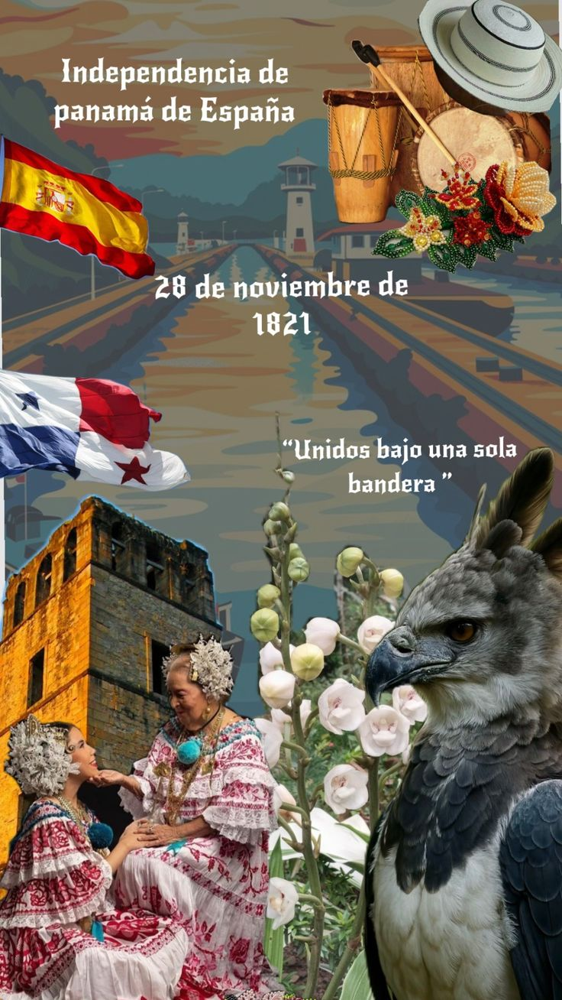

28 De Noviembre

El 28 de noviembre se celebra la independencia
de Panamá de España, proclamada en 1821, y es un día
de conmemoración nacional con desfiles y actos cívicos
.El 28 de noviembre se celebra la independencia de Panamá
de España, proclamada en 1821, y es un día de
conmemoración nacional con desfiles y actos cívicos.
Contexto Histórico
El 28 de noviembre de 1821, Panamá declaró su independencia de España
, poniendo fin a más de 300 años de dominio colonial. Este proceso de
emancipación comenzó el 10 de noviembre de 1821 con el Primer Grito de Independencia
en la Villa de Los Santos, liderado por el Coronel Segundo de Villarreal. A lo largo de estos días
, diversas localidades se unieron al movimiento independentista, culminando
en la declaración formal de independencia en la ciudad de Panamá.
Celebraciones y conmemoraciones
Cada 28 de noviembre, los panameños celebran su independencia
con una serie de actividades conmemorativas, que incluyen
Desfiles: En varias ciudades, especialmente en la Villa de Los Santos,
se llevan a cabo desfiles cívicos y militares.
Actos Cívicos: Se realizan ceremonias en honor a los próceres de la independencia
y se recuerda la importancia de la libertad y la soberanía nacional.
Festividades: La población participa en festividades que reflejan el orgullo nacional y la historia del país.
Importancia del 28 de Noviembre
Este día no solo marca la independencia de Panamá, sino que también simboliza
el deseo de libertad y autodeterminación del pueblo panameño. La independencia
se enmarca dentro de un contexto más amplio de movimientos emancipadores en
América Latina, inspirados por ideales de libertad y justicia.
En resumen, el 28 de noviembre es una fecha clave en la historia de Panamá,
celebrada con orgullo y recordada por su significado en la
lucha por la independencia y la formación de la identidad nacional.
Un Ejemplo de un desfile del
28 de noviembre aquí en el
distrito de volcan